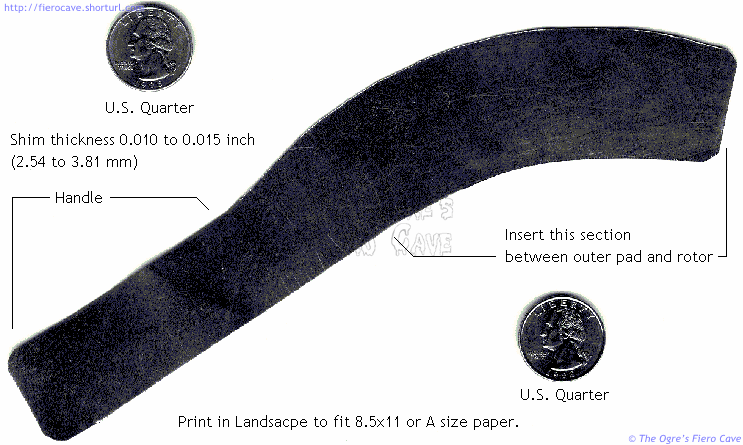

Go Home
Site Map
Go Home
Site Map

Notes
You only need one shim. The shim is to be removed from the caliper after adjustment.
The image is a little smaller than original. A little small is ok. If you cut it too large, it will sit on the rotor rust and you don't want that.